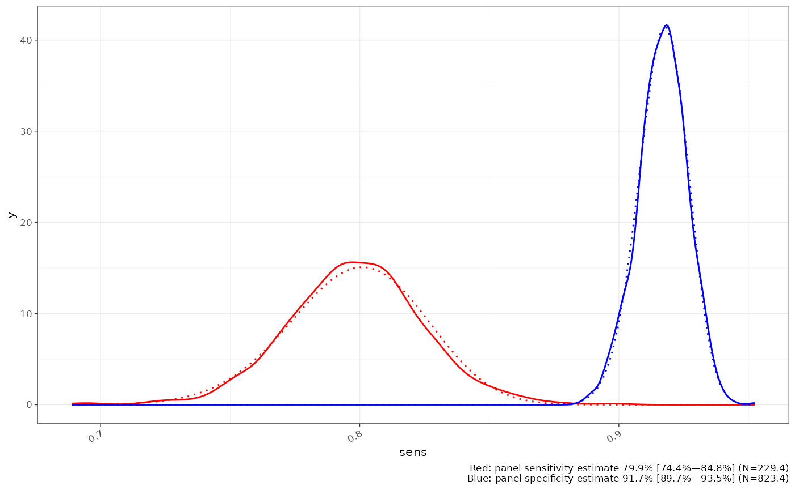
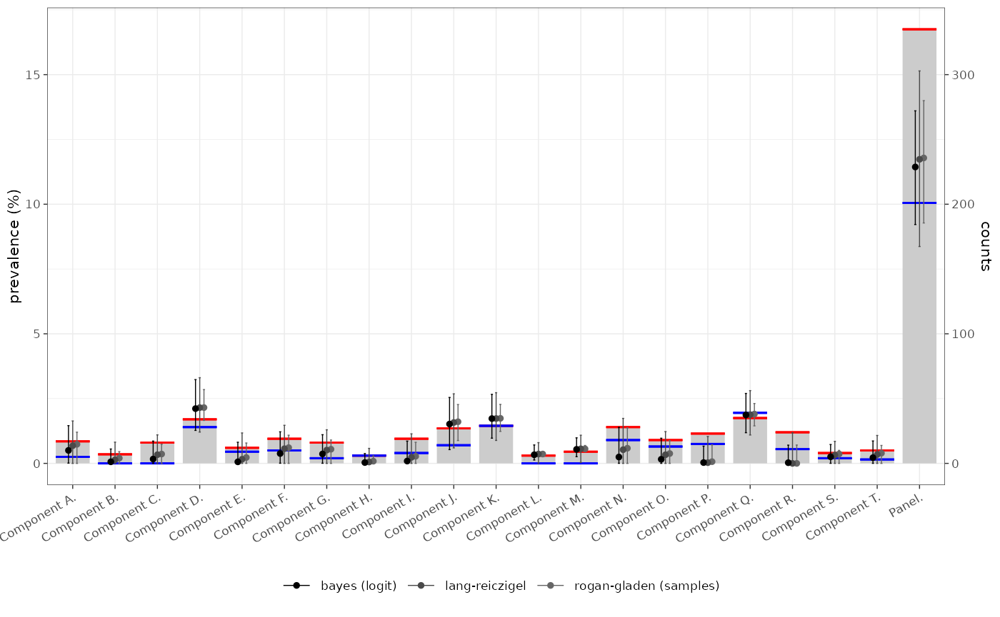

devtools::load_all()
#> ℹ Loading testerror
library(tidyverse)
#> ── Attaching core tidyverse packages ──────────────────────── tidyverse 2.0.0 ──
#> ✔ dplyr 1.1.2 ✔ readr 2.1.4
#> ✔ forcats 1.0.0 ✔ stringr 1.5.0
#> ✔ ggplot2 3.5.0 ✔ tibble 3.2.1
#> ✔ lubridate 1.9.3 ✔ tidyr 1.3.0
#> ✔ purrr 1.0.1
#> ── Conflicts ────────────────────────────────────────── tidyverse_conflicts() ──
#> ✖ readr::edition_get() masks testthat::edition_get()
#> ✖ dplyr::filter() masks stats::filter()
#> ✖ purrr::is_null() masks testthat::is_null()
#> ✖ dplyr::lag() masks stats::lag()
#> ✖ readr::local_edition() masks testthat::local_edition()
#> ✖ dplyr::matches() masks tidyr::matches(), testthat::matches()
#> ℹ Use the conflicted package (<http://conflicted.r-lib.org/>) to force all conflicts to become errors
library(testerror)
options(mc.cores = 2) #parallel::detectCores())
# rstan::rstan_options(auto_write = FALSE)
here::i_am("vignettes/testerror.Rmd")
#> here() starts at /home/vp22681/Dropbox/Git/testerror
source(here::here("vignettes/formatting.R"))We define panel testing as testing for multiple subtypes of disease, where any positive result for a subtype is regarded as a positive for the disease. As we describe in our paper this leads to compound error, which is particularly significant when the individual components are present at low prevalence and the number of components involved is large.
To describe the impact of test error on this kind of panel we have constructed a simulation based on a panel test with 20 components, with an overall panel prevalence of 10%, distributed randomly between components. Each component test has 99.5% specificity and 80% sensitivity.
tmp = testerror:::panel_example(
comp_spec = beta_dist(p = 0.995, n=2000)$r(20),
comp_sens = beta_dist(p = 0.8, n=100)$r(20),
n_comp = 20, n_samples = 2000, n_controls = 800,exact = FALSE)
design = tmp$design %>% dplyr::filter(test != "Panel") %>% select(-n_components)
design %>% dplyr::mutate(across(c(-test), ~sprintf("%1.2f%%", .x*100))) %>%
default_table()| design_prev | design_spec | design_sens | test |
|---|---|---|---|
| 0.34% | 99.45% | 76.08% | Component A |
| 0.00% | 99.60% | 82.05% | Component B |
| 0.00% | 99.39% | 81.45% | Component C |
| 1.46% | 99.47% | 75.34% | Component D |
| 0.38% | 99.62% | 69.96% | Component E |
| 0.51% | 99.51% | 76.00% | Component F |
| 0.30% | 99.35% | 72.43% | Component G |
| 0.26% | 99.76% | 83.75% | Component H |
| 0.34% | 99.46% | 86.18% | Component I |
| 0.70% | 99.40% | 81.94% | Component J |
| 1.62% | 99.66% | 82.54% | Component K |
| 0.00% | 99.77% | 88.52% | Component L |
| 0.00% | 99.74% | 83.52% | Component M |
| 0.63% | 99.29% | 76.57% | Component N |
| 0.63% | 99.45% | 85.06% | Component O |
| 0.76% | 99.38% | 82.51% | Component P |
| 1.66% | 99.66% | 79.24% | Component Q |
| 0.51% | 99.22% | 78.83% | Component R |
| 0.13% | 99.61% | 79.33% | Component S |
| 0.24% | 99.65% | 80.10% | Component T |
The simulation generates a control data set based on pre-specified component test performance and a set of simulated known negatives (specificity) and known positives (sensitivity), and a observation data set based on component prevalence, and test performance. The control data set is summarised in the following table:
tmp$performance %>% dplyr::transmute(
test = test,
specificity = sprintf("%d/%d = %s", false_pos_controls, n_controls, format(spec, "{sprintf('%1.1f%% [%1.1f%% \u2013 %1.1f%%]',median*100, lower*100,upper*100)}")),
sensitivity = sprintf("%d/%d = %s", false_neg_diseased, n_diseased, format(sens, "{sprintf('%1.1f%% [%1.1f%% \u2013 %1.1f%%]',median*100, lower*100,upper*100)}"))
) %>% default_table()| test | specificity | sensitivity |
|---|---|---|
| Component A | 3/800 = 99.5% [98.9% – 99.9%] | 9/30 = 69.1% [52.0% – 83.3%] |
| Component B | 2/800 = 99.7% [99.1% – 99.9%] | 8/30 = 72.3% [55.4% – 85.8%] |
| Component C | 4/800 = 99.4% [98.7% – 99.8%] | 3/30 = 88.3% [74.2% – 96.4%] |
| Component D | 1/800 = 99.8% [99.3% – 100.0%] | 8/30 = 72.3% [55.4% – 85.8%] |
| Component E | 4/800 = 99.4% [98.7% – 99.8%] | 11/30 = 62.8% [45.4% – 78.2%] |
| Component F | 4/800 = 99.4% [98.7% – 99.8%] | 6/30 = 78.7% [62.5% – 90.4%] |
| Component G | 3/800 = 99.5% [98.9% – 99.9%] | 5/30 = 81.9% [66.3% – 92.5%] |
| Component H | 2/800 = 99.7% [99.1% – 99.9%] | 2/30 = 91.5% [78.6% – 98.0%] |
| Component I | 6/800 = 99.2% [98.4% – 99.6%] | 4/30 = 85.1% [70.2% – 94.5%] |
| Component J | 2/800 = 99.7% [99.1% – 99.9%] | 9/30 = 69.1% [52.0% – 83.3%] |
| Component K | 1/800 = 99.8% [99.3% – 100.0%] | 7/30 = 75.5% [58.9% – 88.1%] |
| Component L | 0/800 = 99.9% [99.5% – 100.0%] | 5/30 = 81.9% [66.3% – 92.5%] |
| Component M | 0/800 = 99.9% [99.5% – 100.0%] | 6/30 = 78.7% [62.5% – 90.4%] |
| Component N | 8/800 = 98.9% [98.0% – 99.5%] | 7/30 = 75.5% [58.9% – 88.1%] |
| Component O | 5/800 = 99.3% [98.5% – 99.7%] | 5/30 = 81.9% [66.3% – 92.5%] |
| Component P | 9/800 = 98.8% [97.9% – 99.4%] | 3/30 = 88.3% [74.2% – 96.4%] |
| Component Q | 1/800 = 99.8% [99.3% – 100.0%] | 4/30 = 85.1% [70.2% – 94.5%] |
| Component R | 11/800 = 98.5% [97.6% – 99.2%] | 10/30 = 66.0% [48.6% – 80.8%] |
| Component S | 1/800 = 99.8% [99.3% – 100.0%] | 4/30 = 85.1% [70.2% – 94.5%] |
| Component T | 2/800 = 99.7% [99.1% – 99.9%] | 8/30 = 72.3% [55.4% – 85.8%] |
The main simulation data of the test results observation is the following format:
testerror:::.input_dataA dataframe containing the following columns: - id (character) - the patient identifier - test (factor) - the test type - result (logical) - the test result
Ungrouped.
No default value.
sim_result = tmp$samples %>% dplyr::select(id,test,result = observed)
sim_result %>% glimpse()
#> Rows: 40,000
#> Columns: 3
#> $ id <int> 1, 1, 1, 1, 1, 1, 1, 1, 1, 1, 1, 1, 1, 1, 1, 1, 1, 1, 1, 1, 2, …
#> $ test <fct> Component A, Component B, Component C, Component D, Component E…
#> $ result <int> 0, 0, 0, 0, 0, 0, 0, 0, 0, 0, 0, 0, 0, 0, 0, 0, 0, 0, 0, 0, 0, …and the control group a set of counts:
sim_control = tmp$performance %>% dplyr::select(test, false_pos_controls, n_controls, false_neg_diseased, n_diseased)
sim_control %>% glimpse()
#> Rows: 20
#> Columns: 5
#> $ test <fct> Component A, Component B, Component C, Component D,…
#> $ false_pos_controls <int> 3, 2, 4, 1, 4, 4, 3, 2, 6, 2, 1, 0, 0, 8, 5, 9, 1, …
#> $ n_controls <dbl> 800, 800, 800, 800, 800, 800, 800, 800, 800, 800, 8…
#> $ false_neg_diseased <int> 9, 8, 3, 8, 11, 6, 5, 2, 4, 9, 7, 5, 6, 7, 5, 3, 4,…
#> $ n_diseased <dbl> 30, 30, 30, 30, 30, 30, 30, 30, 30, 30, 30, 30, 30,…given that we know the true prevalence, sensitivity and specificity of the simulation we can calculate the theoretical true prevalence, sensitivity and specificity of the panel
# this is set in the simulation to be 0.1
testerror::panel_prevalence(p = design$design_prev)
#> [1] 0.0999988
# the specificity of the panel is the product of component specificites
testerror::panel_spec(spec = design$design_spec)
#> [1] 0.9084818
# the sensitivity of the panel is a complex relationship
testerror::panel_sens(p = design$design_prev, sens = design$design_sens, spec = design$design_spec)
#> [1] 0.8186082In most cases we only have observed data and control groups to estimate the panel test performance parameters. This introduces uncertainty into estimates of the panel sensitivity and specificity, which is estimated using resampling. The resulting empirical distributions are well represented by a Beta distribution, for both sensitivity and specificity (dotted lines - matched by moments), unless there had been a great deal of variation in the component panel performance metrics.
component_counts = sim_result %>%
dplyr::summarise(pos = sum(result), n = dplyr::n(), .by=test)
sens_dist = testerror::uncertain_panel_sens_estimator(
pos_obs = component_counts$pos,
n_obs = component_counts$n,
false_pos_controls = sim_control$false_pos_controls,
n_controls = sim_control$n_controls,
false_neg_diseased = sim_control$false_neg_diseased,
n_diseased = sim_control$n_diseased
)
spec_dist = testerror::uncertain_panel_spec(
false_pos_controls = sim_control$false_pos_controls,
n_controls = sim_control$n_controls
)
ggplot()+
ggplot2::geom_density(aes(x=sens),data=tibble::tibble(sens=sens_dist), colour="red")+
ggplot2::geom_function(fun = beta_fit(sens_dist)$d, linetype="dotted", colour="red")+
ggplot2::geom_density(aes(x=spec),data=tibble::tibble(spec=spec_dist), colour="blue")+
ggplot2::geom_function(fun = beta_fit(spec_dist)$d, linetype="dotted", colour="blue")+
ggplot2::labs(caption = sprintf("Red: panel sensitivity estimate %s\nBlue: panel specificity estimate %s", format(beta_fit(sens_dist)), format(beta_fit(spec_dist))))
Using the estimates of the panel sensitivity and specificity it is possible to generate an estimate for true prevalence for the panel using a rogan-gladen estimate
panel_count = sim_result %>%
dplyr::summarise(panel_result = any(result), .by = id) %>%
dplyr::summarise(panel_pos = sum(panel_result), panel_n = dplyr::n()) %>%
dplyr::mutate(panel_test_pos = sprintf("%1.2f%% (%d/%d)", panel_pos/panel_n*100, panel_pos, panel_n))
adj = panel_count %>% dplyr::mutate(
uncertain_panel_rogan_gladen(
panel_pos_obs = panel_pos,
panel_n_obs = panel_n,
pos_obs = component_counts$pos,
n_obs = component_counts$n,
false_pos_controls = sim_control$false_pos_controls,
n_controls = sim_control$n_controls,
false_neg_diseased = sim_control$false_neg_diseased,
n_diseased = sim_control$n_diseased
) %>%
dplyr::select(tidyselect::starts_with("prevalence"))
)
adj %>% dplyr::select(`Panel test positives` = panel_test_pos, `Modelled prevalence` = prevalence.label, `Method` = prevalence.method) %>% default_table()| Panel test positives | Modelled prevalence | Method |
|---|---|---|
| 16.75% (335/2000) | 11.80% [8.96% — 14.16%] | rogan-gladen (samples) |
The 16.75% (335/2000) positives is a poor estimate of true prevalence which is set in this scenario to 10%. The adjusted value 11.80% [8.96% — 14.16%] includes the true value in its confidence limits.
corr = true_panel_prevalence(
test_results = sim_result,
false_pos_controls = sim_control$false_pos_controls,
n_controls = sim_control$n_controls,
false_neg_diseased = sim_control$false_neg_diseased,
n_diseased = sim_control$n_diseased,
method = "rogan-gladen"
)
#> Warning in stats::qbeta(p, shape1, shape2): qbeta(a, *) =: x0 with |pbeta(x0,*)
#> - alpha| = 0.06217 is not accurate
#> Warning in stats::qbeta(p, shape1, shape2): qbeta(a, *) =: x0 with |pbeta(x0,*)
#> - alpha| = 0.06217 is not accurate
corr2 = true_panel_prevalence(
test_results = sim_result,
false_pos_controls = sim_control$false_pos_controls,
n_controls = sim_control$n_controls,
false_neg_diseased = sim_control$false_neg_diseased,
n_diseased = sim_control$n_diseased,
method = "lang-reiczigel"
)
#> Warning in stats::qbeta(p, shape1, shape2): qbeta(a, *) =: x0 with |pbeta(x0,*)
#> - alpha| = 0.49713 is not accurate
#> Warning in stats::qbeta(p, shape1, shape2): qbeta(a, *) =: x0 with |pbeta(x0,*)
#> - alpha| = 0.022126 is not accurate
#> Warning in stats::qbeta(p, shape1, shape2): qbeta(a, *) =: x0 with |pbeta(x0,*)
#> - alpha| = 0.49713 is not accurate
#> Warning in stats::qbeta(p, shape1, shape2): qbeta(a, *) =: x0 with |pbeta(x0,*)
#> - alpha| = 0.022126 is not accurate
corr3 = true_panel_prevalence(
test_results = sim_result,
false_pos_controls = sim_control$false_pos_controls,
n_controls = sim_control$n_controls,
false_neg_diseased = sim_control$false_neg_diseased,
n_diseased = sim_control$n_diseased,
method = "bayes",
model_type = "logit"
)
#> Warning in stats::qbeta(p, shape1, shape2): qbeta(a, *) =: x0 with |pbeta(x0,*)
#> - alpha| = 0.06217 is not accurate
#> Warning in stats::qbeta(p, shape1, shape2): qbeta(a, *) =: x0 with |pbeta(x0,*)
#> - alpha| = 0.06217 is not accurate
#> Warning: There were 4 divergent transitions after warmup. See
#> https://mc-stan.org/misc/warnings.html#divergent-transitions-after-warmup
#> to find out why this is a problem and how to eliminate them.
#> Warning: Examine the pairs() plot to diagnose sampling problems
testerror:::demo_bar_plot(tmp$summary %>% dplyr::inner_join(bind_rows(corr,corr2,corr3),by="test"),.pcv=FALSE)
corr3 %>% dplyr::transmute(
Test = test,
Positivity = sprintf("%d/%d (%1.2f%%)", pos_obs, n_obs, pos_obs/n_obs*100),
`Estimated prevalence` = prevalence.label,
`Sensitivity` = sens.label,
`Specificity` = spec.label,
`Method` = prevalence.method
) %>% default_table() %>% huxtable::set_top_border(row = huxtable::final(1), col=huxtable::everywhere, value = 1)| Test | Positivity | Estimated prevalence | Sensitivity | Specificity | Method |
|---|---|---|---|---|---|
| Component A | 17/2000 (0.85%) | 0.50% [0.01% — 1.46%] | 71.26% [54.05% — 85.07%] | 99.58% [99.09% — 99.91%] | bayes (logit) |
| Component B | 7/2000 (0.35%) | 0.06% [0.00% — 0.56%] | 74.63% [58.46% — 87.41%] | 99.75% [99.50% — 99.95%] | bayes (logit) |
| Component C | 16/2000 (0.80%) | 0.17% [0.00% — 0.86%] | 90.81% [77.60% — 97.64%] | 99.44% [99.04% — 99.82%] | bayes (logit) |
| Component D | 34/2000 (1.70%) | 2.11% [1.27% — 3.23%] | 74.61% [57.56% — 87.51%] | 99.92% [99.54% — 100.00%] | bayes (logit) |
| Component E | 12/2000 (0.60%) | 0.06% [0.00% — 0.82%] | 64.58% [47.08% — 80.26%] | 99.51% [99.14% — 99.81%] | bayes (logit) |
| Component F | 19/2000 (0.95%) | 0.38% [0.01% — 1.22%] | 81.20% [65.23% — 92.04%] | 99.43% [98.96% — 99.84%] | bayes (logit) |
| Component G | 16/2000 (0.80%) | 0.36% [0.00% — 1.11%] | 84.34% [68.89% — 94.25%] | 99.58% [99.12% — 99.90%] | bayes (logit) |
| Component H | 6/2000 (0.30%) | 0.03% [0.00% — 0.38%] | 93.69% [82.38% — 98.85%] | 99.78% [99.52% — 99.96%] | bayes (logit) |
| Component I | 19/2000 (0.95%) | 0.09% [0.00% — 0.86%] | 87.48% [72.89% — 95.92%] | 99.22% [98.79% — 99.65%] | bayes (logit) |
| Component J | 27/2000 (1.35%) | 1.52% [0.53% — 2.54%] | 71.33% [53.98% — 85.06%] | 99.78% [99.22% — 99.97%] | bayes (logit) |
| Component K | 29/2000 (1.45%) | 1.73% [0.97% — 2.66%] | 77.76% [61.79% — 89.44%] | 99.92% [99.52% — 100.00%] | bayes (logit) |
| Component L | 6/2000 (0.30%) | 0.33% [0.13% — 0.71%] | 84.60% [69.43% — 94.05%] | 100.00% [99.96% — 100.00%] | bayes (logit) |
| Component M | 9/2000 (0.45%) | 0.54% [0.26% — 0.99%] | 81.01% [64.89% — 91.89%] | 100.00% [99.95% — 100.00%] | bayes (logit) |
| Component N | 28/2000 (1.40%) | 0.25% [0.00% — 1.39%] | 77.87% [60.19% — 90.19%] | 98.91% [98.38% — 99.48%] | bayes (logit) |
| Component O | 18/2000 (0.90%) | 0.16% [0.00% — 0.97%] | 84.29% [68.61% — 93.96%] | 99.33% [98.91% — 99.75%] | bayes (logit) |
| Component P | 23/2000 (1.15%) | 0.03% [0.00% — 0.66%] | 90.58% [77.38% — 97.53%] | 98.94% [98.47% — 99.38%] | bayes (logit) |
| Component Q | 35/2000 (1.75%) | 1.87% [1.18% — 2.70%] | 87.57% [73.34% — 95.76%] | 99.92% [99.53% — 100.00%] | bayes (logit) |
| Component R | 24/2000 (1.20%) | 0.03% [0.00% — 0.70%] | 68.07% [49.96% — 82.48%] | 98.81% [98.35% — 99.22%] | bayes (logit) |
| Component S | 8/2000 (0.40%) | 0.25% [0.00% — 0.73%] | 87.76% [72.37% — 95.86%] | 99.87% [99.55% — 100.00%] | bayes (logit) |
| Component T | 10/2000 (0.50%) | 0.22% [0.00% — 0.86%] | 74.62% [57.27% — 87.72%] | 99.73% [99.40% — 99.96%] | bayes (logit) |
| Panel | 335/2000 (16.75%) | 11.44% [9.22% — 13.60%] | 80.61% [75.14% — 85.24%] | 91.49% [89.88% — 93.02%] | bayes (logit) |
# testerror:::demo_qq_plot(tmp$summary %>% dplyr::inner_join(bind_rows(corr,corr2, corr3)))